If you don't want to print now,
Data from two groups
When data are collected from two groups, we are usually interested in differences between the groups in general. The specific individuals are of less interest. Questions are therefore about the characteristics of the populations or processes that we assume underlie the data.
Example
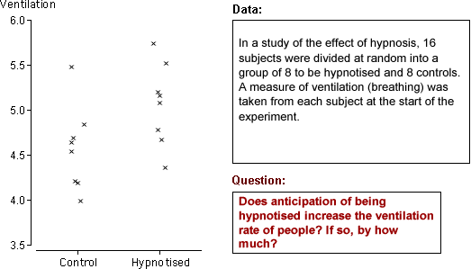
The questions do not refer to the 16 specific subjects — they ask about whether anticipation of hypnosis affects the ventilation rate in general. We would like to use the answers to predict what will happen to other people.
Data and model
Data from two groups can be displayed with two histograms:
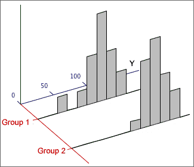
The diagram below illustrates a possible model for the data above.
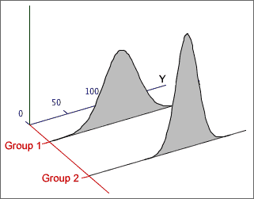
Parameters
A normal model for two groups has four unknown parameters (the mean and standard deviation for each normal distribution). These parameters give considerable flexibility and allow the model to be used for a variety of different data sets.
(The number of parameters can be reduced to three if it is assumed that the two standard deviations are the same, but we will not consider this type of model here.)
Parameter estimates
A normal model for 2-group data involves 4 unknown parameters, µ1, µ2, σ1 and σ2. The means and standard deviations in the two samples provide objective estimates of the four parameters.
Comparing the populations
Although standard deviations in the two populations may also differ, we are usually most interested in the difference between the population means. Differences between the means can be expressed in terms of the model parameters with the following questions.
Randomness of sample difference
These questions are about µ2 - µ1 and the
best estimate of it is  .
However,
.
However,  cannot
give definitive answers since
it is random — it varies from sample to sample.
cannot
give definitive answers since
it is random — it varies from sample to sample.
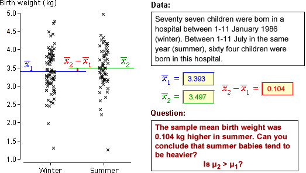
Without an understanding of the distribution of  ,
it is impossible to properly interpret what the sample difference, 0.104 kg,
tells you about the difference between the underlying population means.
,
it is impossible to properly interpret what the sample difference, 0.104 kg,
tells you about the difference between the underlying population means.
Sample mean and sum
The mean of a random
sample,  ,
has a distribution that is approximately normal if the sample size, n, is
large and alway has a
mean and standard deviation that depend on the population mean, µ, and standard deviation,
σ,
,
has a distribution that is approximately normal if the sample size, n, is
large and alway has a
mean and standard deviation that depend on the population mean, µ, and standard deviation,
σ,
| = μ |
| = |
Occasionally the sum of values in a random sample values is more useful than the mean,

Its distribution is a scaled version of the distribution of the mean — the same shape but different mean and standard deviation.


Mean vs Sum
As the sample size increases,
Sum and difference of two variables
Applying the result about the sum of a random sample to a sample of size n = 2, X1 and X2,

If we generalise by allowing X1 and X2 to have different means, µ1 and µ2, but the same σ,

A similar result holds for the difference between X1 and X2:

If X1 and X2 are independent and have normal distributions, their sum and difference are also normally distributed.
General result
The results generalise further to independent variables that may have different means and standard deviations.

The formulae for the standard deviations are more easily remembered in terms of the variances of the quantities. For example,

Finding probabilities
To find the probability that a sum or difference satisfies an inequality, the inequality should be translated into ones about a z-score, using the mean and standard deviation of the quantity,

The standard normal distribution can then be used to find the probabilities. The examples below illustrate the method.
Example (total of several variables)

Example (sum of two variables with different sd)

Difference between means
The difference between any two independent quantities X1 and X2 has a distribution with

Applying this to the difference between the means of two random samples,

Irrespective of the distributions within the
two groups,

Estimation error
The difference between the sample means,  ,
is a point estimate of the difference between the means of the underlying populations, µ2 - µ1.
In order to properly interpret it, we must understand the distribution of
the estimation error.
,
is a point estimate of the difference between the means of the underlying populations, µ2 - µ1.
In order to properly interpret it, we must understand the distribution of
the estimation error.

Replacing σ12 and σ22 by s12 and s22 gives an approximate error distribution,

The standard deviation of these errors is the standard error of the estimator.
Examples

Our best estimate is that anticipation of hypnosis results in a mean ventilation rate that is 0.491 higher than the control group. From the error distribution, the error in this estimate is unlikely to be more than about 0.6.
If σ1 and σ2 were known...
| Prob ( | is within ± 1.96 | 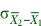 | of μ2 - μ1) = 0.95 |
so a 95% confidence interval for µ2 - µ1 would be
| ± 1.96 |
When σ1 and σ2 are unknown...
We must replace σ1 and σ2 by s1 and s2 in the confidence interval, and the constant '1.96' must be replaced by a slightly larger value from t-tables,

where the degrees of freedom for the t-value are
ν = min (n1−1, n2−1)
(A more complex formula is available that gives a higher value for ν. It is slightly better but the difference is usually negligible.)
Example
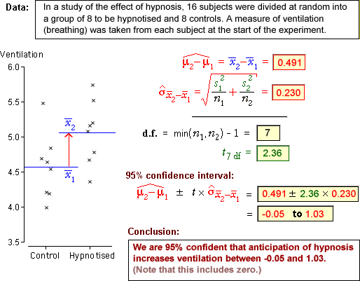
Testing for a difference between two means
The difference between two groups that is of most practical importance is a difference between their means.
H0 : μ2 − μ1 = 0
HA : μ2 − μ1 ≠ 0
The summary statistic that throws most light on these hypotheses is the difference
between the sample means,  .
Testing therefore involves assessment of whether this difference is unusually
far from zero.
.
Testing therefore involves assessment of whether this difference is unusually
far from zero.

As with all other hypothesis tests, a p-value near zero gives evidence that the null hypothesis does not hold — evidence of a difference between the group means.
Example

General properties of p-values
A statistical hypothesis test cannot provide a definitive answer about whether two groups have different means. The randomness of sample data means that p-values are also random quantities.
It is possible to get a small p-value (supporting HA) when H0 is true, and it is possible to get a large p-value (consistent with H0) when HA is true.
There is some chance of being misled by an 'unlucky sample.
Effect of increasing the sample size
One- and two-tailed tests for differences
In a two-tailed test, the alternative hypothesis is that the two population means are different. A one-tailed test arises when we want to test whether one mean is higher than the other (or lower than the other).

Test statistic, p-value and conclusion
Consider a test for the hypotheses,
H0 : μ1 = μ2
HA : μ1 > μ2
The alternative hypothesis is only supported by very small values of  .
This also corresponds to small values of the test statistic t ,
so the p-value is the lower tail probability of the t distribution.
.
This also corresponds to small values of the test statistic t ,
so the p-value is the lower tail probability of the t distribution.

A small p-value is interpreted as giving evidence that H0 is false, in a similar way to all other kinds of hypothesis test.
Examples

Properties of p-values
We again stress that a statistical hypothesis test cannot provide a definitive answer. The randomness of sample data means that p-values are also random quantities, so there is some chance of us being misled by an 'unlucky' sample:
Two groups of successes and failures
We now consider data that are obtained as random samples from two populations, with the sampled individuals being categorised into successes and failures.

Since our model involves only two parameters, π1 and π2, the two groups are the same only if π2 - π1 = 0. The value of π2 - π1 is usually unknown but can be estimated by p2 - p1. However p2 - p1 is a random quantity so its variability must be taken into account when interpreting its value.
Example
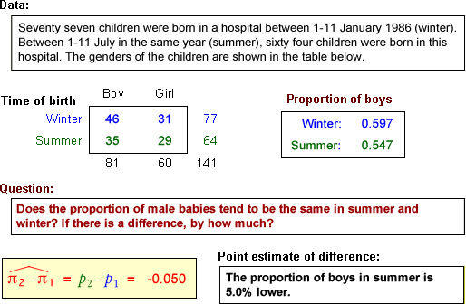
Note that the questions do not refer to the specific 141 births in the study. They ask about differences between winter and summer births 'in general'.
We are interested in π2 - π1 rather than p2 - p1, so we need to understand the accuracy of our point estimate.
Difference between two proportions
Within each group, the sample proportion of successes, p, has a distribution that is approximately normal in large samples and has mean and standard deviation

Applying the general results about the difference between two independent random quantities:

Since the individual proportions are approximately normal (in large samples), their difference is also approximately normal:

Standard error of p2 - p1
The standard deviation of p2 - p1 is also its standard error when it is used to estimate π2 - π1,

In practice, π1 and π2 must be replaced by their sample equivalents to estimate the standard error.

Confidence interval for difference
Most 95% confidence intervals are of the form
estimate ± 1.96 × se(estimate)
perhaps with a refinement of using a slightly higher value than 1.96 (e.g. a t-value) if the standard error is estimated. Applying this to our estimate of π2 - π1and using 2 instead of 1.96 gives the approximate 95% confidence interval

Example

Two-tailed test
H0 : π1 = π2
HA : π1 ≠ π2
For this test, the steps involved in obtaining a p-value are:

The p-value is interpreted in the same way as for all previous tests. A p-value close to zero is unlikely when H0 is true, but is more likely when HA holds. Small p-values therefore provide evidence of a difference between the population probabilities.
One-tailed test
In a 1-tailed test, the alternative hypothesis is
HA : π1 − π2 > 0 or HA : π1 − π2 < 0
The test statistic is identical to that for a 2-tailed test and the p-value is obtained in a similar way, but it is found from only a single tail of the standard normal distribution.
Alternative test statistic
Since π1 and π2 are equal if H0 is true, the overall proportion of successes, p, can be used in the formula for the standard error of p2 - p1.

This refinement makes little difference in practice, so the examples below use the 'simpler' formula that we gave earlier.
Two-tailed example

One-tailed example

Paired data
When two types measurements, X and Y, are made from each individual (or other unit), the data are called bivariate. Sometimes the two measurements are of closely related quantities and may even describe the same quantity at different times.
When the sum or difference of X and Y is a meaningful quantity, the data are called paired data.
Hypotheses of interest
For paired data, We often want to test whether the means of the two variables are equal,
H0 : μX = μY
HA : μX ≠ μY
Sometimes a one-tailed test is required, such as
H0 : μX = μY
HA : μX > μY
Examples
Differences
Information about the difference between the means of X and Y is contained in the values D = (Y - X) for each individual. The hypotheses
H0 : μX = μY
HA : μX ≠ μY
can then be expressed as
H0 : μD = 0
HA : μD ≠ 0
This reduces the paired data set to a univariate data set of differences, D, and reduces questions about (µY - µX) to questions about the mean of D.
Analysis of paired data
By taking differences between Y and X, much of the variability between the individuals is eliminated, making it easier to see whether their means are different. The example below shows paired data on the left with blue lines joining the x- and y-values in each pair. The differences on the right make it clearer that the y-values are usually higher than the corresponding x-values.

Approach (paired t-test)
Testing whether two paired measurements, X and Y, have equal means is done in terms of the differences
D = Y - X
The test is then expressed as
H0: µD = 0
HA: µD ≠ 0
or a one-tailed variant. The hypotheses are therefore assessed with a standard univariate t-test using test statistic

This is compared to a t distribution with n - 1 degrees of freedom to find the p-value.
Example
The diagram below illustrates a 2-tailed test for equal means, based on n = 15 paired observations.

From the p-value, we conclude that there is very strong evidence that the means for Y and X are different.
Choice between paired data or two independent samples
It is sometimes possible to answer questions about the difference between two means by collecting two alternative types of data.
If the individuals in the 2 groups can be paired so that the pairs are relatively similar, a paired design gives more accurate results.
Matched pairs in experiments
In experiments to compare two treatments, it may be possible to group the experimental units into pairs that are similar in some way. These are called matched pairs. If the two experimental units in each pair are randomly assigned to the two treatments, the data can be analysed as described in this section.
The difference between the treatments is estimated more accurately than in a completely randomised experiment.
Data
In this section, we examine data that may arise as:
We will model the data in terms of g groups. The data often arise from completely randomised experiments with g treatments.
Model
The model that was used for 2 groups can be easily extended to to g > 2 groups, allowing different means and standard deviations in all groups.
| Group i: | Y ~ normal (µi , σi) |

However to develop a test for equal group means with g > 2 groups, we must make an extra assumption that the standard deviations in all groups are the same.
| Group i: | Y ~ normal (µi , σ) |
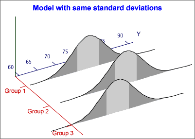
If there are g groups, this model has g + 1 unknown parameters — the g group means and the common standard deviation, σ. It is flexible enough to be useful for many data sets.
If the assumptions of a normal distribution and constant variance do not hold, a nonlinear transformation of the response may result in data for which the model is appropriate.
Estimating the group means
We now assume a normal model with the same standard deviation in each group,
| Group i: | Y ~ normal (µi , σ) |
The sample means provide estimates of the {µi}:

Estimating σ2
The sample standard deviation in any single group, si, is a valid estimate of σ, but we need to combine these g separate estimates in some way.
It is easier to describe estimation of σ2 rather than σ. If the sample sizes are the same in all groups, a pooled estimate of σ2 is the average of the group variances,

If the sample sizes are not equal in all groups, this is generalised by adding the numerators and denominators of the formulae for the g separate group variances,

More mathematically, yij denotes the j 'th of the ni values in group i , for i = 1 to g . The pooled estimate of σ2 can then be written as

The pooled variance is influenced most by the sample variances in the groups with biggest sample sizes.
Revisiting the difference between two group means
In an earlier section, we described confidence intervals and tests about the difference between two group means, µ2 - µ1. They can be improved if we can assume that
σ1 = σ2 = σ
Inference is still based on  ,
but the equation for its standard deviation can be simplified
,
but the equation for its standard deviation can be simplified
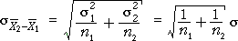
Confidence interval
A 95% confidence interval for µ2 - µ1 has the same general form as before,

but the standard deviation and the degrees of freedom for the t-value, ν, are different.
| degrees of freedom | ||
|---|---|---|
| Allowing σ1 ≠ σ2 | 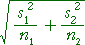 | min( n1 - 1, n2 - 1) |
| Assuming σ1 = σ2 = σ | n1 + n2 - 2 |
If it can be assumed that σ1 = σ2, the confidence interval is usually narrower.
Example
The diagram below shows 95% confidence intervals obtained by the two methods.

The p-value for this test is found from the tail area of the t distribution with (n1 + n2 - 2) degrees of freedom.
Comparing several groups
A new approach is needed to compare the means of three or more groups — the methods for two groups cannot be extended. We again assume a normal model with equal standard deviations,
| Group i: | Y ~ normal (µi , σ) |
Testing whether there are differences between the groups involves the hypotheses,
H0 : µi = µj for
all i and j
HA: µi ≠ µj for
at least some i, j
Variation between and within groups
Testing whether the model means, {µi}, are equal is done by assessing the variation between the group means in the data. However, because of randomness in sample data, the means are unlikely be the same, even if H0 is true.
In the example on the left below, the group means vary so much that the {µi} are almost certainly not equal. However the group means on the right are relatively similar and their differences may simply be randomness.

To assess whether the means are 'unusually different', we must also take account of the variation within the groups. The data set on the left below gives much stronger evidence of group differences than that on the right, even though the group means are the same in both data sets.

The evidence against H0 depends on the relative size of the variation within groups and between groups.
Notation
In the formulae in this page, the values in the i'th group are denoted
by yi 1, yi 2,
... . More generally, the j'th
value in the i'th group is called yij and
the
mean of the values in the i'th group is  .
.
Total variation
| The total sum of squares reflects the total variability of the response. |
The overall variance of all values (ignoring groups) is the total sum of squares divided by (n - 1).

| The sum of squares between groups measures the variability of the group means. |
Variation between groups is summarised by the differences between the group means and the overall mean. Note that the summation is over all observations in the data set.

| The sum of squares within groups quantifies the spread of values within each group. |
This is also called the residual sum of squares since it describes variability that is unexplained by differences between the groups. Note that the pooled estimate of the common variance, σ2, is the sum of squares within groups divided by (n - g).

Sums of squares
| Sum of squares | Interpretation |
|---|---|
| Overall variability of Y, taking no account of the groups. | |
| Variability that cannot be explained by the model. | |
| Variability that is explained by the model. |
Coefficient of determination
The proportion of the total sum of squares that is explained by the model is called the coefficient of determination,

Example

Hypothesis test
The following hypotheses are used to test whether the group means are all equal:
H0 : µi = µj for
all i and j
HA: µi ≠ µj for
at least some i, j
We will describe some of the steps for this test, but cannot justify them here.
Mean sums of squares
The three sums of squares are first divided by values called their degrees of freedom:
| The mean total sum of squares is the sample variance of the response (ignoring groups). | |
| The mean within-group sum of squares is the pooled estimate of the variance within groups. | |
| The mean between-group sum of squares is harder to directly interpret. |
The numerators in these ratios add up:
SSTotal = SSBetween + SSWithin
and the same relationship holds for their denominators (degrees of freedom):
dfTotal = dfBetween + dfWithin
F ratio and p-value
The test statistic is an F-ratio,

This test statistic compares between- and within-group variation. The further
apart the group means, the larger SSBetween and the larger the F-ratio.
Large values of F suggest that H0 does not hold — that the group means are not the same.
The p-value for the test is the probability of such a high F ratio if H0 is true (all group means are the same). It is based on a standard distribution called an F distribution and is interpreted in the same way as other p-values.
The closer the p-value to zero, the stronger the evidence that H0 does not hold.
Analysis of variance table
An analysis of variance table (anova table) describes some of the calculations above:

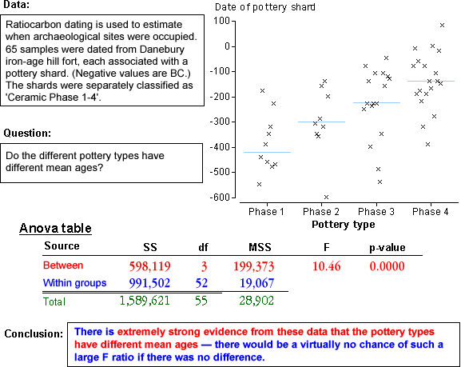
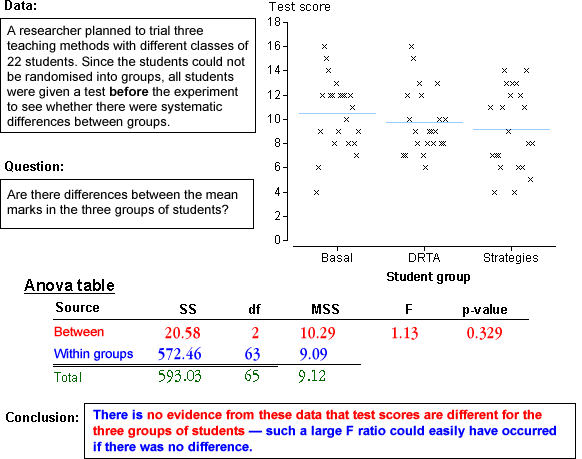
In paired data, two related measurements, X and Y, are made from each sampled individual and we are interested in testing whether their means are equal.
Groups of 3 or more values
The idea of paired data can be extended to situations in which 3 or more related measurements are made from each 'individual'. Two important situations that give rise to this type of data are:
Example (randomised blocks)
In an experiment to assess the effect of codeine and acupuncture for relieving dental pain, 32 subjects were grouped into blocks of 4 according to an initial assessment of their tolerance to pain. Four treatments were randomly given to the four subjects in each block and pain relief scores were recorded.
| Pain relief score | |||||||||
|---|---|---|---|---|---|---|---|---|---|
| Tolerance group |
Control | Codeine only |
Acupuncture only |
Codeine + Acupuncture |
|||||
|
|
|
|
|
|||||
Example (repeated measures)
An experiment investigated the use of nicotine to control tics in patients with Tourette's syndrome. For each patient, the number of tics was recorded before a nicotine gum was chewed and at different times afterwards.
| Number of tics during 30-min period | |||||||||
|---|---|---|---|---|---|---|---|---|---|
| Patient | Baseline | Chewing gum | 0-30 min after | 30-60 min after | |||||
|
|
|
|
|
|||||
We start with a simple example in which one of the g treatments is a standard or 'baseline' treatment. The other (g − 1) treatments can be compared to it using standard confidence intervals for paired data. These confidence intervals are usually narrower than the corresponding confidence intervals that would be found for independent samples.
Example
In a randomised experiment about pain relief treatments in dental patients, 32 subjects were grouped into blocks of four according to an initial assessment of their tolerance to pain. One treatment was a placebo (dummy treatment) that the others could be compared to.
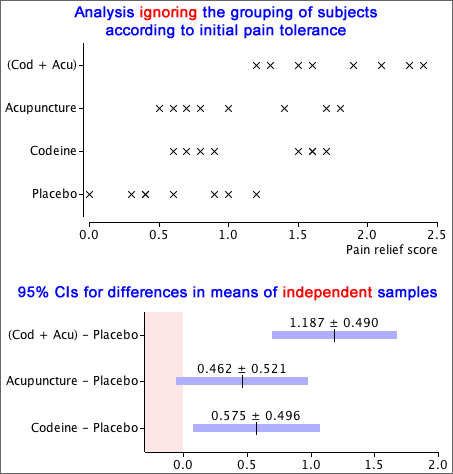
If the initial grouping of paitents into blocks is ignored, 95% confidence intervals for the improvement in pain relief over the placebo are wide. Taking account of the initial grouping, differences are far more accurately estimated.

Testing for equal treatment means
If there is no baseline treatment, analysis should start with a single hypothesis test for whether all treatment means are equal. The standard multi-group analysis of variance test for equal means in a completely randomised experiment (ignoring the blocks) should not be used for experiments with blocks.
Ignoring the existence of blocks makes it much harder to detect differences between treatments.
Example
Five different observers each watched the same group of 10 cattle and reported how long each animal spent grazing.
Wrong analysis
Ignoring the fact that the same animals were observed by all five observers, the data would be analysed with the anova table below. From the large p-value, we would conclude that there were no differences between the observers.
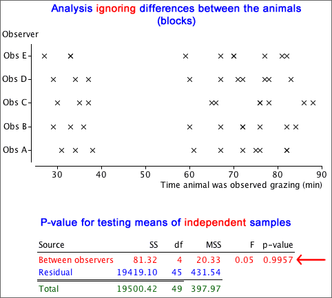
Correct analysis
Much of the variability in the data is due to differences between the animals (blocks), and an analysis that ignores this is much less sensitive to differences between the observers. We will not explain the correct test for blocked data until later in this section, but it gives a p-value that is interpreted in the same way as the p-value above. It is shown below and shows that there are almost certainly differences between the observers.
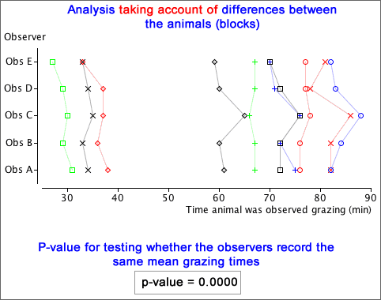
In paired data, each of the two treatments is used once within each block (pair). The previous pages generalised this to more than two treatments, but each treatment was still used once in each block. We now generalise further to allow the block size to be any multiple of the number of treatments.
Reducing unexplained variability
To assess the significance of differences between experimental treatments, variation in the treatment means is compared to the amount of unexplained (random) variation. With less unexplained variation, there is less chance of the differences between treatment means having arisen by chance. There are two ways to reduce unexplained variation:
The simplest way to use blocks in an experiment is with a randomised block design. In this, the block size is a multiple of the number of treatments. Each treatment is used for the same number of experimental units within each block, and the treatments are randomly allocated to units within the blocks.
Example
An experiment was conducted in which the experimental units were intestinal preparations from fish, but each fish would only give six preparations. The six preparations from each fish constitute a block of units. Two treatments were used, with the six preparations from each of four fish randomly split into three preparations for each treatment (a randomised block experiment).
Wrong analysis
Ignoring possible differences between the four fish and treating the data as a completely randomised experiment with 24 experimental units, we would conclude that there is moderately strong evidence of a difference between the two treatments.
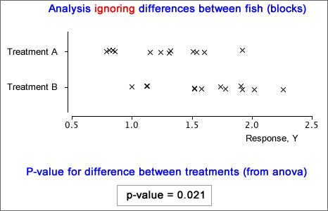
Correct analysis
There are considerable differences between the four fish (blocks), with much lower variability within any single fish. The correct analysis is explained later in this section and the resulting p-value gives much stronger evidence of a difference between the two treatments.
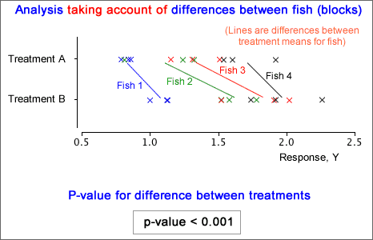
Three-dimensional scatterplot of data
Data from a randomised block experiment can be displayed in a three-dimensional scatterplot:

Model
Both blocks and treatments explain some variability in the response measurement, Y, but...
Blocks and treatments are modelled in the same way:
y = (overall
mean) + (effect depending on block)
+ (effect depending on treatment)
+ error
The error is again assumed to have a normal distribution with mean zero and constant standard deviation. Within any block, changing the treatment simply adds or subtracts a constant to the response.
Making all block means equal
Our model for randomised block data explains the effect of the blocks on Y as a addition of a "block effect" to all values within each block. This suggests eliminating differences between the blocks by adjusting the values in all blocks to have the same block means.
Example
The diagram below shows results from an experiment with blocks of size five and five treatments. Different colours are used for the different blocks and the block means are shown with vertical lines.

A lot of the variability in the response, Y, is caused by differences between the blocks. The diagram below adjusts the values by adding a constant to all values in each block, givving all blocks the same mean response.

Since there is now much less 'unexplained' variation and there are now no differences between blocks, applying the standard anova test for equal treatment means to the adjusted data seems reasonable and is much more sensitive to treatment differences:

The treatment and residual sums of squares shown here are the basis for testing whether the treatment means are equal, but the analysis is not completely correct.
| The residual degrees of freedom are too high. |
The correct analysis of variance table for testing equal treatment means is a little more complex for randomised block data; it will be explained in the following pages.
Notation
For randomised block data, we use the following notation:
| ybgr | the rth of the observations in block b that get treatment g |
| 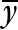b | mean response in block b |
| g | mean response for all observations getting treatment g |
| overall mean response for all observations |
In many examples, there is only a single observation for each combination of block and treatment, but our notation allows for two or more.
Sums of squares
For randomised block data, we again split the total sum of squares into components, but now need to use three components.

The block and treatment sums of squares describe variation that is explained by the randomised block model whereas the residual sum of squares is unexplained.
| The total sum of squares reflects the total variability of the response. | |
| The sum of squares between blocks measures the variability of the block means. | |
| The sum of squares between treatments measures the variability of the treatment means. | |
| The residual sum of squares describes the variation that is unexplained by blocks or treatments. |
Note that all summations are over all observations in the data set.
Residuals and residual variation
As in regression, we define residuals to be the difference between the recorded response values and the closest we can get from our model. For a randomised block model, the best estimate is:
 = b0 + b1 xi
= b0 + b1 xi
This can be interpreted as:
Anova table
The three components that add to total sum of squares are usually laid out in an analysis of variance table (or simply anova table).
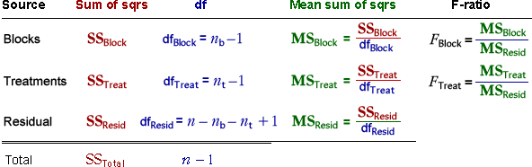
The anova table adds a few extra columns:
Tests
The F-ratio for differences between the treatments compares the variability explained by the treatments to the residual (unexplained) variation. The larger the F-ratio, the stronger the evidence for a difference between treatments. A formal hypothesis test is based on the F-ratio and its p-value is the probability of getting as big an F-ratio as that recorded if all treatment means were equal. It is interpreted in the same way as all other p-values.
A p-value can also be found to test whether there are differences between the blocks, but this is usually of less interest.
In practice, computer software will produce the anova table for you, so you only need to interpret the p-value associated with the treatments.
Examples